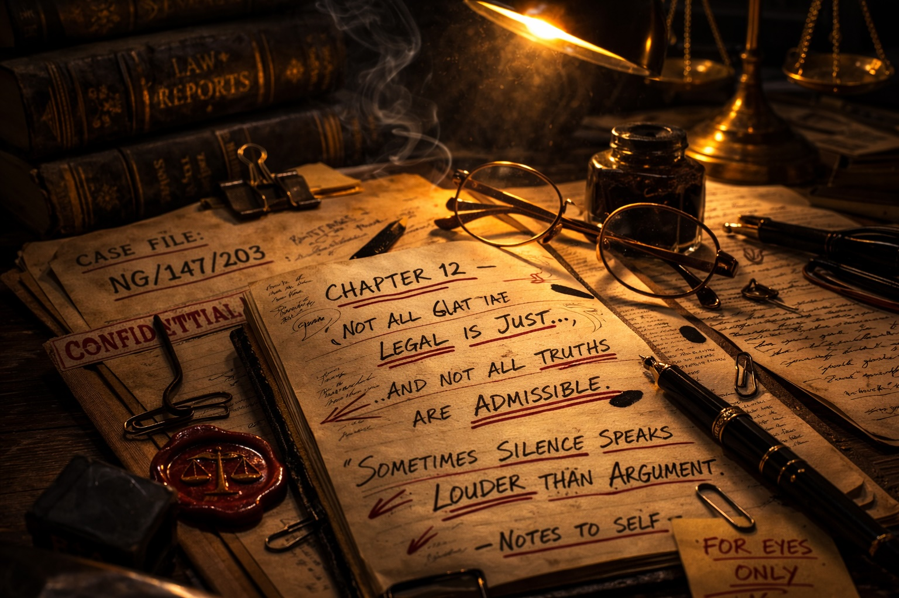

In this chapter, I will regale you with a few tales from the courtroom, and beyond, which deserve to be preserved for future generations.These are truthful accounts, as I was either present or have had them corroborated by eyewitnesses.
I was defending a Barnsley man for a spate of armed robberies throughout South Yorkshire, and his ex-girlfriend was to be the Crown’s star witness. She had turned turtle and, to avoid charges of complicity, was to tender Queen’s evidence.She had already done so, successfully, as my client’s brother (in arms) was serving a 14-year prison sentence after a jury had accepted her evidence as truthful, while my hero was ‘on the run’.
The appointed High Court judge liked both power and the sound of his own voice. On his watch no jury was going to acquit my client, particularly as he had presided over the less-than-successful outcome for my client’s sibling. I instructed Peter Wright from a Manchester set,who was to become the youngest ever Treasury Counsel. I appreciated early on thathe was a man of talent, and I dispensed with the need to appoint a QC to lead the case, permitting Wright to be sole defence counsel.Yet the realisation that we were not to receive a fair trial came early on when the High Court judge opined, in a loud voice, to my defence counsel:
“I have never been a fan of corroboration.”
His words landed like a hammer blow, a less than coded or judicial way of stating thatthe Crown’s female witness would suffice to send my client off to serve his sentence. Wright did not reply to the judge, but turned his back on him to say to me:
“Well, that’s one for the Appeal Court.”
As Wright turned back to face the judge, I was left pondering; I had been hoping not to have to lodge appeal documents with an acquittal before this Hull jury.Yet, this was only one of many comments and rulings by this judge which made a ‘not guilty’ a desire rather than possible outcome. Nevertheless, I was pleased to note that, although Wright was intent on greasing the judicial pole to ascend its ranks, it was clear to me that he disliked this judge. Not least because he was giving Wright no respect, and I sensed that this would play to our advantage as we got deeper into the trial.
I had seen enough turncoat females to know exactly the type who would follow the usher into a hushed courtroom and into the witness box.I was not disappointed. She appeared dressed in black, not a hint of cleavage, dark eye liner and her hair tied back in a bun. Leonardo da Vinci would have drooled over the prospect of capturing the vulnerability of this frightened witness.
I glanced over at the O.I.C., who casually winked back at me with a smirk on his face. A cartoon bubble over his head would surely have read:“Game, set and match”.
“Do you need a tissue?” came the comforting words of the judge. “Feel free to give your evidence sitting down”, and he turned to smile at the jury members.
“Fuck me” were the words which I angrily spat out from behind my clenched hand, only audible to my defence counsel and, possibly, the prosecution’s QC, who had risen to his feet to commence his obsequious examination-in-chief.In front of me, I had taken out from a folder some photographs which the client had supplied to me days earlier. These cast the virtuous nature of the woman in the witness box in an altogether more seedy light. Here she was, legs akimbo, with various ripened fruit in different stages of entry into her vagina.I was particularly fond of the banana shot - it had a certain frisson. “Ripeness is all”, I whispered, all Shakespearean, to Wright as I handed him the colour snaps.
“Keep them, Nick” came his terse response, careful not to leave any of his fingerprints on the offending pictures, in case a ‘black mark’ was entered against his name in higher judicial circles.I had hoped, given the ‘Mother Teresa’ figure who had entered the courtroom, that my counsel would be more amenable to introducing these pictures in cross-examination. Plainly he was not, as his view was such that an ‘entry’ into the trial could antagonise the eight female jurors.
As I sat there observing the mismatch between witness and fruit, I considered leaving the courtroom. When I was yards in front of the judge and jury, I would bow, but feign a slip. The photos would then be flung skywards, onlyto flutter onto the floor, hopefully face up, to a startled courtroom.I am sad to say I bottled it and, even to this day, I regret not carrying out this ‘mealy’* task. The reality was we had secured other, less sexually-charged, evidence to unbuckle her from her lofty seat.
This was a woman out to save her own skin.A woman who, on closer inspection, had moved her own goalposts and swayed to the rhythms of police pressure. As with Euphegenia Doubtfire, her image began to crumble and a gruff South Yorkshire accent began to echo in the courtroom. She even succumbed to her initial refusals to answer questions a tad too troublesome. A glance at the jury members showed they had wriggled free of the prosecution’s shackles,and saw ‘Mother Teresa’ in the same light as Christopher Hitchens portrayed her inThe Missionary Position.
The best was yet to come, as we headed past closing speeches and deep into the summing up by the judge. Defence lawyers know only too well that a summing up in a gangland case is not an exercise in restraint or neutrality. The judge was still reeling from our decision, after dismantling their star witness, not to call our ‘turn’. He remained in the dock as he was, in legal jargon, ‘not jury-friendly’.
Never in my career has judge impartiality been better demonstrated than when, without warning, and whilst explaining why witnesses failed to pick my client on identification parades, he plucked up the sawn-off shotgun and brandished it at the jury. The weapon, which had remained dormant on the judge’s bench, was now his prop. A few of the jury screamed, and the senior police officer was unsure ifthey should mobilise to handcuff the trial judge, as they had been trained to do. The incident lasted seconds, but it was no coincidence that all 12 jury members, when the gun had been laid down, made eye contact with the man in the dock. All our efforts over many days had crumbled with this callous, unjudicial act of violence.
“Cunt” I whispered to Wright, feeling that was the only proper response to the charade we had all witnessed.Wright could do better than issue an expletive, as he was seen to rise to his feet - Lazarus would have been proud. It is more or less forbidden for counsel to interrupt a closing speech, let alone one from a ‘red’ High Court judge.
“My Lord,” Wright calmly and engagingly opined, “if you are to become an exhibit in this case, could I remind you the attacker, on the evidence before the jury, was left-handed. You, my Lord, are right-handed - could you be kind enough to re-enact it.”
You could have heard a pin (or photograph) drop after this short, pert address. The judge was crestfallen. He had fluffed his lines. He felt he had no option but to commence the re-enactment. This time it had lost context, lost its glint in the courtroom light and, rather than being brandished, the gun was moved in slow motion. His Lordship looked foolish and just a little angry, his cheeks reddening.
“Not guilty” verdicts followed, and the judge then spat out:“You are free to go”. I was pleased my hero did not take this opportunity to ask for the gun back. There was no thanking the jury for their careful deliberations throughout the trial, as the judge would have been content to lock them all up for contempt. ‘Thank you’ only follows ‘guilty’ verdicts.Outside the court, I sidled up to Wright and held out the offending pictures, in the hope that, this time, he would accept them.
“No, Nick, keep those for another day as this prosecution was fruitless!”
***
I now turn to some quick-fire recollections in the style of: “Have you heard the one about the Irishman, the prostitute and the pathologist?”
Indeed, there are a few moments from the courtroom and beyond which deserve to be recorded. I am satisfied by either having been present, or had the account repeated, that these are not fictitious.
In Bradford Magistrates, decades ago, a woman of the night was appearing for soliciting in the wee small hours of the morning on infamous Lumb Lane. It was her umpteenth appearance and, given her aliases, the court clerk was having difficulty having the lady identify herself from the dock. “Smith…Hughes…Davies… Woodhouse”, all met with a shake of the head. At this juncture the defence solicitor, a pompous man, rose to his feet to scythe through the impasse with:“She prefers Cox.”
Cox hung in the air, as did the imagery, as tears began to well in the eyes of all present. The Chairman gathered his paperwork and, giggling, suggested a short recess. It could have been worse as, in recent times, I acted for one David Annal in a three-month drug trial in Manchester. God forbid it had been one of his female relatives with whom the Bradford lawyer had interjected.
As an advocate you always fear that moment when your brain is rewinding as fast as possible, to try to retrieve words which have left a courtroom aghast. I once sat next to a colleague who, during a bail application before Halifax Magistrates, insisted that his client was not the type of man “to commit rape willy-nilly.”
In a trial before the same tribunal, the prosecution was attempting to rubbish the defence account of an item which had fallen through the bottom of a shopping basket.When the defendant gave evidence, the prosecutor believed the defence claim would be shattered by re-enacting the incident. He drew himself to his full height, produced the shopping basket and exclaimed: “So you expect this court to believe you put this item into the basket and it fell through?”
A clunk was heard on the courtroom floor, close to the prosecutor’s feet, as the item duly escaped the basket’s gappy clutches. Moments later, he made an application to have the case he was prosecuting discontinued.
One must be careful not to ask questions to which one does not know the answer. In the days when you could test the Crown’s evidence by calling their witnesses, a co-defending solicitor enquired of a ‘protected’ witness in a kidnap and drugs case: “When was the last time you sold drugs?” The response was short and succinct: “When your client stopped supplying them to me.” Ouch! The case was duly committed for trial by jury.
In [long since disbanded] Brighouse Magistrates in West Yorkshire, an elderly, infirm witness was attempting to give evidence in a case related to a minor public order offence. It was taking an age for the prosecutor to elicit the events from her, and he was no nearer extracting the words which had caused her offence. As the old lady stuttered some more, indicating only that she had been called an ‘F.C.’, the well-known court clerk - concerned that his Friday afternoon appointment withthe local hostelry was being unduly delayed - could take no more. “He called you a fucking cunt, didn’t he?” he asked, impatiently. To which the alarmed witness retorted: “Nnno…..fat cow.” And so it was that the old dear ended up being abused far more in her local magistrates court than on the night in question.
In Manchester Crown Court, a High Court judge had been kept waiting for the second day running by the late arrival of the defence counsel, who was landed gentry in Cheshire and duly stood admonished by the judge.In an effort to explain his tardiness he uttered the immortal line: “My Lord, I can only apologise, my man servant was late drawing my bath.”
That man is now a Queen’s Counsel who my brother instructswhen he has a no-hoper of a case. The juries love his eccentricity. Furthermore, they would not believe they were being told anything but the truth - or that any failings in the case were due to him, not his lay client.
I recall here also the brilliance of George Carman QC, another Blackpudlian, who had been thrown out of a nightclub for a drunken misdemeanour. Looking up at the bouncer from the pavement outside the club where he now found himself, he requested: “Just do me one favour”.
“What is that, Mr Carman?”
“Do not tell me why you have ejected me from the premises,” the respected QC ordered.
“Why is that?” asked the bouncer.
Hanging out a pointed finger and looking upwards, Carman quipped: “Because you couldn’t afford it!” before his head hit the gutter.
Then there is Howard Arthur (Chapter ‘X’), who recounted to me a visit to HMP Walton (now HMP Liverpool) shortly before entertainer Ken Dodd’s tax evasion trial where he had seen daubed on the prison wall: “Forthcoming attractions - Ken Dodd”.I am uncertain whether this graffiti was authorised by Dodd’s counsel, Carman.
Then there are the learning curves that all young solicitors experience as they make their way in the trade. I recall in Halifax licensing court one young buck at his first liquor-related hearing.He was representing a major client of his firm, and was confused when the court clerk asked if his client had a ‘protection order’ as he could only recollect from law lectures protection orders relating to mental health.He was heard, in more than a stage whisper as he wandered over to his client (with numerous landlords present) asking the clerk: “Are you mad?” I am unsure if the man remained a client of the firm, but I certainly didn’t see the solicitor in licensing court again.
Alcohol is, indeed, a common thread in many of the more memorable courtroom asides to have come to my knowledge over the years. At Lancaster Crown Court, a case of serious public disorder was being prosecuted by a counsel who is now a Treasury solicitor. The defendants were all represented by Manchester counsel, who were good friends and who could all drink terrific volumes of alcohol. The prosecutor had let it be known that he would not be seeking a conviction against one of the defendants, and that it was likely he would be released at a half-time submission.The counsel for this defendant enjoyed the fruits of this knowledgeby drinking one too many, in doing so failing spectacularly to put his client’s case to the prosecution witnesses called by the Crown.
On about the fourth day, the counsel became agitated as the prosecutor appeared to have forgotten his assurance. His client was being drawn into the thick of the violence. Worried by his own professional conduct, he wrote out a note which he handed to his counsel next to him to pass down to the prosecutor.It read simply: “What about the sacrificial lamb?” Prosecuting counsel halted his questioning of a witness to deal with this missive.He scrawled a response on the note, which was passed back down the line to its author, equally as curt. “Fuck the sacrificial lamb. This is silence of the lambs!” And the prosecutor lost the case against all the defendants.
Very often, it is the characters who write the most indelible courtroom scripts and theatre. In a London Crown Court once, a middle-aged Jamaican man with a limited grasp of Englishand arguably even more limited intellect, was being railroaded by the trial judge.The man ended up having to represent himself in front of the jury and the trial, which should have been swift, took over two weeks. The highlight as proceedings meandered was when the trial judge refused another request for assistance from the accused, who announced, loudly, in a thick Jamaican accent: “This is a kangaroo court and you……” pointing at the judge “are the kangaroo keeper.” Succinct and powerful it was, but it did not halt the jury in convicting him of running a cannabis café in Brixton.
Another well-known character, this time on the Halifax circuit, was Joseph Marum. He was once being represented by my brother before the town’s magistrates, appearing as he was for yet another shop theft to go with the 50-odd others listed in his previous convictions. Joseph’s was one of the first cases to be heard after the law had changed to provide for a third discount for an early guilty plea. Joseph was an alcoholic, and my brother had not expected his plea to hit directly upon the new law. When the court clerk read out the charge Joseph, in a perfect Irish brogue, announced: “Pure guilty.” Surely such a response deserved more than a third discount, did it not? It rendered any mitigation futile, but was a beautiful distillation of the new legislation.
Acting for the ‘regulars’ such as Joseph led one down unusual paths, and we ended up acting for him in a civil claim against the council in respect of his mother’s funeral. Council officials had failed to dig the grave out correctly and, when the coffin was lowered, it tipped and wedged in the void.There were gasps and much wailing from the large Irish community attending the burial. We sued for pain and suffering.As with his plea to shop theft, my counsel could not improve the pleadings beyond Joseph’s own words: “The worst of it is, I don’t know whether my mother is on her belly or her back.”In the face of such an atrocity, the council’s insurance company was swift to nip the claim in the bud, and offered a fulsome amount of compensation - which Joseph swiftly accepted, and dissipated, in local off licences.
During this case, the barrister had attended my Halifax offices to take instructions. The appointment was late afternoon, and there was no sign of Joseph.A colleague suggested the counsel should drive out to Joseph’s council house at Mixenden, on the outskirts of town. As they walked up to the door, the counsel was startled to see a horse tethered on the tiny front lawn - not the sort of thing you’d expect in Halifax. Knock after knock, no response. My employee shouted through the letterbox: “Joseph, counsel’s here.” A loud Irish voice screamed from upstairs. “It’s not my ‘orse!”.
Then, at the Bradford Law Society dinner in the late eighties, the President of the local Law Society had been interrupted during his speech by the late arrival of an Asian solicitor. As he made his way into the room the President spoke into his microphone: “Has anyone ordered a taxi?” The lawyer, the subject of this comic aside, enjoyed it, but the President was reported to the Law Society for an allegation of racism.
Here endeth the asides, all of which have lightened the daily burden of criminal defence work. I am certain, in every crevice of professional life where horrors abound, that there are those releases which only humour can bring. What to the average ‘Joe’ would seem callous and offensive is, to ‘us’, simply the cut and thrust of work life. Laughter keeps us away from counselling sessions.
I bonded, when I was 20, with a joke told by my hockey team mate, Dave Nuttall, about two pathologists. Over a beer, they were digesting their day’s work. One had carried out a post-mortem on a glamour model and was regaling his colleague with her ample assets. It culminated in:
“…and she had a clitoris like a gherkin.”
“That big?” enquired his astounded colleague.
“No. That bitter!”
* Mealy fruit or vegetables are soft and feel rough, dry and unpleasant in the mouth!
Page 1 of 1